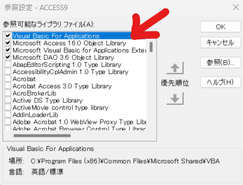

Microsoft Accessで開発されたアプリケーション、特に多くのフォームを持つものは、時間と共に内部のVBAコードが複雑化し、その全体像を把握することが難しくなる傾向があります。ドキュメントが古くなったり、存在しなかったりすると、システムのメンテナンス、改修、さらには将来的な移行計画において、大きな困難とリスクを伴います。
つまり、大抵の場合はメチャクチャ大変ってことです＿( _´ω`)_ﾍﾟｼｮ
小規模なシステムならともかく、年月を経るに従って大抵は規模が大きくなります。そのため、手作業で各フォームのVBAコードを調査し、その内容を理解・整理するには膨大な時間と労力が必要です。
そこで、現状のシステムに含まれるフォームについて、構文的・構造的な特徴を抽出する分析用コードを作成しました。このVBAスクリプトは、以下のニーズに応えることを目指しています。
GoToステートメントの使用頻度やエラー処理の実装状況など、コード品質に関連する情報を収集し、改善点を見つけるための手がかりを提供します。これにより、構造的な分析はコードに任せて、人間は意味的な分析に注力できます。あくまでも、このコードが分析できるのは構造的な部分ですので、その点はご承知おきください。
Option Compare Database
Option Explicit
' 統合MDB分析ツール (全フォームのVBAコード分析対応)
' データベース構造の包括的な把握と、新システム移行のための機能分析を支援
Sub AnalyzeAllFormsVBACodeToMarkdown()
' プロジェクト内の全フォームのVBAコードを分析し、個別のMarkdownレポートを生成する
Dim frmObj As AccessObject
Dim formName As String
Dim strFilePath As String
Dim intFileNum As Integer
Dim vbProj As Object ' As VBIDE.VBProject
Dim vbCrntProj As Object ' As Application.CurrentProject
Dim vbComp As Object ' As VBIDE.VBComponent
Dim codeMod As Object ' As VBIDE.CodeModule
Dim analysisCounter As Long: analysisCounter = 0
Dim errorCounter As Long: errorCounter = 0
Dim overallStatus As String: overallStatus = ""
On Error GoTo ErrorHandler_Overall
' VBEプロジェクトの取得 (最初に一度だけ)
Set vbCrntProj = Application.CurrentProject
If vbCrntProj Is Nothing Then
MsgBox "VBAプロジェクトにアクセスできませんでした。参照設定やAccessのオプションを確認してください。", vbCritical, "初期化エラー"
Exit Sub
End If
If vbCrntProj.AllForms.count = 0 Then
MsgBox "分析対象のフォームが見つかりません。", vbInformation, "情報"
Exit Sub
End If
Set vbProj = VBE.ActiveVBProject
' 全フォームをループ処理
For Each frmObj In vbCrntProj.AllForms
formName = frmObj.Name
strFilePath = vbCrntProj.Path & "\" & ReplaceValidFileNameChars(formName) & "_VBA_Analysis.md"
Debug.Print "分析開始: " & formName
intFileNum = FreeFile
Open strFilePath For Output As #intFileNum
' レポートヘッダー
Print #intFileNum, "# フォームVBAコード分析レポート: `" & MDEscape(formName) & "`"
Print #intFileNum, ""
Print #intFileNum, "**データベース:** `" & MDEscape(CurrentProject.Name) & "`"
Print #intFileNum, "**分析日時:** " & Now()
Print #intFileNum, ""
Print #intFileNum, "---"
Print #intFileNum, ""
On Error GoTo ErrorHandler_FormLevel ' フォームごとのエラー処理
' VBEコンポーネントとコードモジュールの取得
Dim componentName As String
componentName = "Form_" & formName
Set vbComp = Nothing ' ループごとに初期化
Set codeMod = Nothing
On Error Resume Next ' VBComponent取得時のエラーをハンドル
Set vbComp = vbProj.VBComponents.Item(componentName)
If vbComp Is Nothing Then
Set vbComp = vbProj.VBComponents.Item(formName) ' "Form_"プレフィックスなしも試す
End If
On Error GoTo ErrorHandler_FormLevel ' 通常のエラー処理に戻す
If vbComp Is Nothing Then
Print #intFileNum, "## エラー"
Print #intFileNum, ""
Print #intFileNum, "- フォーム `" & MDEscape(formName) & "` のVBAコンポーネントが見つかりませんでした。"
errorCounter = errorCounter + 1
overallStatus = overallStatus & vbCrLf & "- " & formName & ": VBAコンポーネント取得エラー"
GoTo NextFormIteration
End If
Set codeMod = vbComp.CodeModule
If codeMod Is Nothing Then
Print #intFileNum, "## エラー"
Print #intFileNum, ""
Print #intFileNum, "- フォーム `" & MDEscape(formName) & "` のコードモジュールにアクセスできませんでした。"
errorCounter = errorCounter + 1
overallStatus = overallStatus & vbCrLf & "- " & formName & ": コードモジュールアクセスエラー"
GoTo NextFormIteration
End If
' --- 1. コードの総行数 ---
Print #intFileNum, "## 1. コードの概要"
Print #intFileNum, ""
Print #intFileNum, "- **総行数:** " & codeMod.CountOfLines
Print #intFileNum, ""
Print #intFileNum, "---"
Print #intFileNum, ""
' --- 2. 各プロシージャに関する情報 ---
AnalyzeProceduresMD intFileNum, codeMod, formName, vbProj
Print #intFileNum, "---"
Print #intFileNum, ""
' --- 3. 特定のキーワードや構文の使用状況 ---
AnalyzeKeywordsAndSyntaxMD intFileNum, codeMod
Print #intFileNum, "---"
Print #intFileNum, ""
analysisCounter = analysisCounter + 1
overallStatus = overallStatus & vbCrLf & "- " & formName & ": 正常終了"
NextFormIteration:
If intFileNum > 0 Then Close #intFileNum
intFileNum = 0 ' ファイルハンドルをリセット
Set vbComp = Nothing ' オブジェクト解放
Set codeMod = Nothing ' オブジェクト解放
On Error GoTo ErrorHandler_Overall ' エラーハンドラを全体に戻す
Next frmObj
' --- 全体処理の完了メッセージ ---
Dim summaryMsg As String
summaryMsg = "全フォームのVBAコード分析が完了しました。" & vbCrLf & vbCrLf & _
"処理済みフォーム数: " & analysisCounter & vbCrLf & _
"エラー発生フォーム数: " & errorCounter & vbCrLf & vbCrLf & _
"レポートは各フォーム名のファイルとして、データベースと同じフォルダに保存されました。"
If errorCounter > 0 Then
summaryMsg = summaryMsg & vbCrLf & vbCrLf & "エラーが発生したフォームの詳細:" & overallStatus
MsgBox summaryMsg, vbExclamation, "分析完了 (一部エラーあり)"
Else
MsgBox summaryMsg, vbInformation, "分析完了"
End If
Exit Sub
ErrorHandler_FormLevel:
Print #intFileNum, "## フォームレベルのエラー"
Print #intFileNum, ""
Print #intFileNum, "フォーム `" & MDEscape(formName) & "` の分析処理中に予期せぬエラーが発生しました。"
Print #intFileNum, "- **エラー番号:** " & Err.Number
Print #intFileNum, "- **エラー内容:** `" & MDEscape(Err.Description) & "`"
Debug.Print "フォーム `" & MDEscape(formName) & "` の分析処理中に予期せぬエラーが発生しました。"
Debug.Print "- **エラー内容:** `" & MDEscape(Err.Description) & "`"
errorCounter = errorCounter + 1
overallStatus = overallStatus & vbCrLf & "- " & formName & ": 分析中エラー (" & Err.Number & ")"
Resume NextFormIteration ' エラーが発生したら次のフォームの処理へ
ErrorHandler_Overall:
MsgBox "分析処理全体で予期せぬエラーが発生しました。" & vbCrLf & _
"エラー番号: " & Err.Number & vbCrLf & _
"エラー内容: " & Err.Description, vbCritical, "重大なエラー"
If intFileNum > 0 Then Close #intFileNum ' 開いている可能性のあるファイルを閉じる
End Sub
' ファイル名として使用できない文字を置換するヘルパー関数
Function ReplaceValidFileNameChars(originalName As String) As String
Dim invalidChars As String
Dim i As Long
Dim char As String
Dim resultName As String
invalidChars = "\/:*?""<>|"
resultName = originalName
For i = 1 To Len(invalidChars)
char = Mid(invalidChars, i, 1)
resultName = Replace(resultName, char, "_")
Next i
ReplaceValidFileNameChars = resultName
End Function
Sub AnalyzeProceduresMD(ByVal FileNum As Integer, ByVal codeMod As Object, ByVal currentFormName As String, ByVal vbProj As Object)
' プロシージャ情報を分析しMarkdown形式で出力
' 変更点: GetAllProceduresFromCodeModule を使用してプロシージャリストを最初に取得
Dim allProcs As Collection
Dim procInfo As Variant ' 配列 (プロシージャ名, プロシージャ種類)
Dim procName As String
Dim procKind As Long ' vbext_ProcKind
Dim startLine As Long
Dim lineCount As Long
Dim i As Long
Dim lineText As String
Dim calledProcNamePart As String
Dim controlNames As Collection
Set controlNames = GetFormControlNames(currentFormName)
Print #FileNum, "## 2. プロシージャ分析"
Print #FileNum, ""
If codeMod Is Nothing Or codeMod.CountOfLines <= 1 Then ' 宣言行のみなどの場合
Print #FileNum, "*分析可能なプロシージャはありません。*" & vbCrLf
Exit Sub
End If
' モジュール内の全プロシージャ情報を最初に取得
Set allProcs = GetAllProceduresFromCodeModule(codeMod)
If allProcs.count = 0 Then
Print #FileNum, "*分析可能なプロシージャは見つかりませんでした。*" & vbCrLf
Exit Sub
End If
' 取得したプロシージャリストをループ処理
For Each procInfo In allProcs
procName = procInfo(0)
procKind = procInfo(1)
' 各プロシージャの詳細情報を取得
On Error Resume Next ' ProcStartLine や ProcCountLines でエラーになる可能性
startLine = codeMod.ProcStartLine(procName, procKind)
lineCount = codeMod.ProcCountLines(procName, procKind)
If Err.Number <> 0 Then
Debug.Print "エラー: プロシージャ '" & procName & "' の詳細情報取得に失敗 - " & Err.Description
Err.Clear
GoTo Continue ' エラーが発生したらこのプロシージャの分析をスキップ
End If
On Error GoTo 0
Print #FileNum, "### プロシージャ: `" & MDEscape(procName) & "`"
Print #FileNum, ""
Print #FileNum, "- **種類:** " & MDEscape(ProcKindToString(procKind))
Print #FileNum, "- **行数:** " & lineCount
Dim eventInfo As String
eventInfo = GetEventProcedureInfo(procName, controlNames)
If eventInfo <> "" Then
Print #FileNum, "- **イベントプロシージャ:** " & MDEscape(eventInfo)
End If
Dim callStatements As New Collection
Dim callCount As Long: callCount = 0
If lineCount > 0 And startLine > 0 Then ' 有効な行情報がある場合のみ
For i = startLine To startLine + lineCount - 1
lineText = codeMod.Lines(i, 1)
Dim commentPos As Long
commentPos = InStr(1, lineText, "'")
Dim codeLineOnly As String
If commentPos > 0 Then
codeLineOnly = Trim(Left(lineText, commentPos - 1))
Else
codeLineOnly = Trim(lineText)
End If
If LCase(Left(codeLineOnly, 5)) = "call " Then
callCount = callCount + 1
calledProcNamePart = Trim(Mid(codeLineOnly, 5))
Dim isCustom As Boolean
Dim actualCalledName As String
actualCalledName = ""
If InStr(calledProcNamePart, ".") > 0 And InStr(calledProcNamePart, "(") > InStr(calledProcNamePart, ".") Or InStr(calledProcNamePart, ".") > 0 And InStr(calledProcNamePart, "(") = 0 Then
actualCalledName = Mid(calledProcNamePart, InStrRev(calledProcNamePart, ".") + 1)
If InStr(1, actualCalledName, "(") > 0 Then
actualCalledName = Trim(Left(actualCalledName, InStr(1, actualCalledName, "(") - 1))
End If
Else
actualCalledName = calledProcNamePart
If InStr(1, actualCalledName, "(") > 0 Then
actualCalledName = Trim(Left(actualCalledName, InStr(1, actualCalledName, "(") - 1))
End If
End If
isCustom = IsUserDefinedProcedureName(actualCalledName) ' 修正されたIsUserDefinedProcedureNameを使用
On Error Resume Next
callStatements.Add "`" & MDEscape(codeLineOnly) & "`" & IIf(isCustom, " (自作プロシージャの可能性)", " (組み込み/不明)")
On Error GoTo 0
End If
Next i
End If
Print #FileNum, "- **`Call` ステートメントの数:** " & callCount
If callStatements.count > 0 Then
Print #FileNum, "- **`Call` している行 (コメント除外):**"
Dim stmt As Variant
For Each stmt In callStatements
Print #FileNum, " - " & stmt
Next stmt
For i = 1 To callStatements.count
callStatements.Remove (1)
Next
End If
Print #FileNum, ""
Continue:
Next procInfo
End Sub
Function GetAllProceduresFromCodeModule(ByVal codeMod As Object) As Collection
' 指定されたコードモジュールから全てのプロシージャ名と種類を抽出し、コレクションで返す
' コレクションの各アイテムは配列で、Item(0) = プロシージャ名, Item(1) = プロシージャ種類(vbext_ProcKind)
Dim procs As New Collection
Dim procName As String
Dim procKind As Long ' vbext_ProcKind
Dim currentLine As Long
Dim lastProcName As String: lastProcName = "###INITIAL_VALUE###" ' 前回処理したプロシージャ名を記憶
Dim tempProcInfo(0 To 1) As Variant ' プロシージャ名と種類を格納する配列
If codeMod Is Nothing Or codeMod.CountOfLines = 0 Then
Set GetAllProceduresFromCodeModule = procs ' 空のコレクションを返す
Exit Function
End If
On Error GoTo ErrorHandler_GetAllProcs
currentLine = 1
Do While currentLine <= codeMod.CountOfLines
Dim procNameAtLine As String
Dim procKindAtLine As Long
On Error Resume Next ' ProcOfLineでエラーになることがあるため
procNameAtLine = codeMod.ProcOfLine(currentLine, procKindAtLine)
If Err.Number <> 0 Then
procNameAtLine = "" ' エラー時はプロシージャ名なしとして次の行へ
Err.Clear
End If
On Error GoTo ErrorHandler_GetAllProcs ' 通常のエラー処理に戻す
If procNameAtLine <> "" Then
' 新しいプロシージャが見つかった場合のみコレクションに追加
If procNameAtLine <> lastProcName Then
tempProcInfo(0) = procNameAtLine
tempProcInfo(1) = procKindAtLine
On Error Resume Next ' 重複キーエラーを避ける (通常はlastProcNameで回避されるはず)
procs.Add Item:=tempProcInfo, Key:=procNameAtLine ' プロシージャ名をキーとして追加
If Err.Number <> 0 Then Err.Clear ' 追加エラーは無視して続行
On Error GoTo ErrorHandler_GetAllProcs
lastProcName = procNameAtLine
End If
' 次のチェック開始位置を現在のプロシージャの末尾の次の行に設定
Dim procStart As Long, procLinesCount As Long
procStart = codeMod.ProcStartLine(procNameAtLine, procKindAtLine)
procLinesCount = codeMod.ProcCountLines(procNameAtLine, procKindAtLine)
currentLine = procStart + procLinesCount
Else
' プロシージャ内でない行は次の行へ
currentLine = currentLine + 1
End If
Loop
Set GetAllProceduresFromCodeModule = procs
Exit Function
ErrorHandler_GetAllProcs:
Debug.Print "GetAllProceduresFromCodeModule Error: " & Err.Number & " - " & Err.Description
' エラーが発生した場合でも、それまでに追加されたプロシージャでコレクションを返す
Set GetAllProceduresFromCodeModule = procs
End Function
Function GetFormControlNames(formName As String) As Collection
' フォーム上のコントロール名一覧を取得する
Dim ctl As Control
Dim col As New Collection
Dim frm As Form
Dim isOpen As Boolean
On Error Resume Next ' フォームが開いていない場合のエラー対策
Set frm = Forms(formName)
If Err.Number <> 0 Then
isOpen = False
Err.Clear
DoCmd.OpenForm formName, acDesign, , , , acHidden
If Err.Number = 0 Then Set frm = Forms(formName)
Else
isOpen = True
End If
On Error GoTo 0
If Not frm Is Nothing Then
On Error Resume Next ' コントロールアクセスエラー対策
For Each ctl In frm.Controls
col.Add ctl.Name, ctl.Name ' キーも同じ名前で追加（重複回避のため）
Next ctl
On Error GoTo 0
If Not isOpen And Err.Number = 0 Then
DoCmd.Close acForm, formName, acSaveNo
End If
End If
Set GetFormControlNames = col
End Function
Function GetEventProcedureInfo(procName As String, controlNames As Collection) As String
' プロシージャ名からイベント情報を推測する
Dim parts() As String
Dim objectName As String
Dim eventName As String
Dim ctlName As Variant
GetEventProcedureInfo = ""
If InStr(procName, "_") = 0 Then Exit Function ' アンダースコアがなければイベントプロシージャではないと判断
parts = Split(procName, "_")
If UBound(parts) < 1 Then Exit Function
objectName = parts(0)
eventName = parts(1)
' フォーム/レポートレベルのイベント
If LCase(objectName) = "form" Or LCase(objectName) = "report" Then
GetEventProcedureInfo = MDEscape(objectName) & " の " & MDEscape(eventName) & " イベント"
Exit Function
End If
' コントロールレベルのイベント
On Error Resume Next ' コレクション検索エラー対策
For Each ctlName In controlNames
If LCase(ctlName) = LCase(objectName) Then
GetEventProcedureInfo = "コントロール `" & MDEscape(objectName) & "` の " & MDEscape(eventName) & " イベント"
Exit Function
End If
Next ctlName
On Error GoTo 0
' 特定できなかった場合（例：クラスモジュールのイベントなど）
' ここではフォームに特化しているので、上記で見つからなければ "" を返す
End Function
Function IsUserDefinedProcedureName(procNameToCheck As String) As Boolean
' 指定されたプロシージャ名が、VBA組み込み関数やキーワードでない可能性が高い場合にTrueを返す
' (プロジェクト内に実際に定義があるかまでは厳密にチェックしない簡易版)
IsUserDefinedProcedureName = True ' デフォルトはユーザー定義とみなす
If procNameToCheck = "" Then
IsUserDefinedProcedureName = False
Exit Function
End If
' 明らかにオブジェクトメソッドであるものを除外 (より多くのパターンが必要)
If Left(LCase(procNameToCheck), 4) = "docmd." Or _
Left(LCase(procNameToCheck), 7) = "screen." Or _
Left(LCase(procNameToCheck), 3) = "me." Or _
Left(LCase(procNameToCheck), 6) = "forms!" Or _
Left(LCase(procNameToCheck), 8) = "reports!" Or _
LCase(procNameToCheck) = "currentdb" Or _
LCase(procNameToCheck) = "currentproject" Then
IsUserDefinedProcedureName = False
Exit Function
End If
' VBAの主要なキーワードや組み込み関数を除外
If IsVBAKeywordOrBuiltIn(procNameToCheck) Then
IsUserDefinedProcedureName = False
Exit Function
End If
' ピリオドを含む場合は、オブジェクトのメソッド/プロパティの可能性があるが、
' この関数では単純に名前だけで判断するため、ここではTrueのまま。
' (呼び出し元で Module.Procedure の形式は別途考慮される想定)
End Function
Function IsVBAKeywordOrBuiltIn(word As String) As Boolean
' VBAの主要な予約語または頻出する組み込み関数かどうかを判定する簡易的な関数
' これは完全なリストではない
Dim keywords As Variant
Dim i As Long
' 予約語リスト (IsVBAKeywordから流用・拡張)
keywords = Array("Sub", "Function", "Property", "Get", "Let", "Set", "End", "If", "Then", "Else", "ElseIf", _
"Select", "Case", "For", "To", "Next", "Do", "While", "Loop", "Until", "Wend", "Exit", _
"Call", "Dim", "ReDim", "Const", "Public", "Private", "Friend", "Static", "With", "As", _
"New", "Me", "Nothing", "Empty", "Null", "True", "False", "Not", "And", "Or", "Xor", "Eqv", "Imp", "Is", _
"Like", "Option", "Explicit", "Compare", "Database", "Binary", "Text", "GoTo", "On", "Error", "Resume", _
"Type", "Enum", "Event", "RaiseEvent", "Implements", "Declare", "Lib", "Alias", "AddressOf", "ByVal", "ByRef", "Optional", "ParamArray", _
"Array", "MsgBox", "InputBox", "Chr", "Asc", "Str", "Val", "CStr", "CBool", "CByte", "CCur", "CDate", "CDbl", "CDec", "CInt", "CLng", "CSng", "CVar", _
"Format", "Date", "Time", "Now", "Timer", "DateAdd", "DateDiff", "DatePart", "DateSerial", "DateValue", "Day", "Month", "Year", "Hour", "Minute", "Second", "Weekday", _
"Left", "Right", "Mid", "Len", "InStr", "InStrRev", "Replace", "Split", "Join", "LCase", "UCase", "Trim", "LTrim", "RTrim", "Space", "String", _
"Abs", "Sgn", "Sqr", "Int", "Fix", "Round", "Rnd", _
"RGB", "QBColor", _
"TypeName", "VarType", _
"IsEmpty", "IsNull", "IsDate", "IsNumeric", "IsObject", "IsArray", "IsError", _
"CreateObject", "GetObject", _
"Err", "Erl", _
"Nz", "Choose", "Switch", "IIf", _
"Environ", "Command", "Shell", _
"Beep", "SendKeys", "AppActivate", _
"DoEvents", "EOF", "LOF", "FileLen", "GetAttr", "SetAttr", "Dir", "FreeFile", "Input", "Print", "Write", "Open", "Close", "Seek", "Lock", "Unlock", "Name", "Kill", "FileCopy", "MkDir", "RmDir", "ChDir", "ChDrive" _
) ' 一般的な組み込み関数も追加
IsVBAKeywordOrBuiltIn = False
Dim lowerWord As String
lowerWord = LCase(Trim(word))
For i = LBound(keywords) To UBound(keywords)
If lowerWord = LCase(keywords(i)) Then
IsVBAKeywordOrBuiltIn = True
Exit Function
End If
Next i
' 数値に見えるものは除外 (例: Call 123 はエラーだが、誤判定防止)
If IsNumeric(word) Then
IsVBAKeywordOrBuiltIn = True
Exit Function
End If
' 文字列リテラルの開始/終了に見えるものは除外
If (Left(word, 1) = """" And Right(word, 1) = """") Or (Left(word, 1) = "'" And Right(word, 1) = "'") Then
IsVBAKeywordOrBuiltIn = True
Exit Function
End If
End Function
Function IsVBAKeyword(word As String) As Boolean
' VBAの主要な予約語かどうかを判定する簡易的な関数
' これは完全なリストではない
Dim keywords As Variant
Dim i As Long
keywords = Array("Sub", "Function", "Property", "Get", "Let", "Set", "End", "If", "Then", "Else", "ElseIf", _
"Select", "Case", "For", "To", "Next", "Do", "While", "Loop", "Until", "Wend", "Exit", _
"Call", "Dim", "ReDim", "Const", "Public", "Private", "Friend", "Static", "With", "As", _
"New", "Me", "Nothing", "Empty", "Null", "True", "False", "Not", "And", "Or", "Xor", "Eqv", "Imp", "Is", _
"Like", "Option", "Explicit", "Compare", "Database", "Binary", "Text", "GoTo", "On", "Error", "Resume", _
"Type", "Enum", "Event", "RaiseEvent", "Implements", "Declare", "Lib", "Alias", "AddressOf", "ByVal", "ByRef", "Optional", "ParamArray")
IsVBAKeyword = False
For i = LBound(keywords) To UBound(keywords)
If LCase(word) = LCase(keywords(i)) Then
IsVBAKeyword = True
Exit Function
End If
Next i
End Function
Sub AnalyzeKeywordsAndSyntaxMD(ByVal FileNum As Integer, ByVal codeMod As Object)
' 特定のキーワードや構文の使用状況を分析しMarkdown形式で出力
Dim i As Long
Dim lineText As String
Dim evidences As Collection
Print #FileNum, "## 3. 特定のキーワード・構文の使用状況"
Print #FileNum, ""
If codeMod.CountOfLines <= 1 Then
Print #FileNum, "*分析可能なコードがほとんどありません。*" & vbCrLf
Exit Sub
End If
' --- キーワード定義 ---
Dim keywordSets(0 To 9) As Variant ' 配列のサイズを調整
Dim sectionTitles(0 To 9) As String
' 0: Accessオブジェクト/メソッド
keywordSets(0) = Array("DoCmd.", "Forms!", "Reports!", "Me.", "Screen.ActiveForm", "Screen.ActiveControl", "CurrentDb(", "CurrentProject.")
sectionTitles(0) = "Accessオブジェクト/メソッド"
' 1: DAO/ADOオブジェクト
keywordSets(1) = Array("DAO.Database", "DAO.Recordset", "db.OpenRecordset", "ADODB.Connection", "ADODB.Command", "ADODB.Recordset", "cn.Execute", "rs.Open")
sectionTitles(1) = "DAO/ADOオブジェクト"
' 2: エラー処理構文
keywordSets(2) = Array("On Error GoTo", "On Error Resume Next", "Resume Next", "Resume", "Err.Raise", "Err.Clear") ' エラーハンドラ内のExitは除外
sectionTitles(2) = "エラー処理構文"
' 3: API関数
keywordSets(3) = Array("Declare Sub", "Declare Function") ' 宣言の検出。呼び出しは別途処理が必要
sectionTitles(3) = "API関数 (宣言)"
' 4: ファイル操作
keywordSets(4) = Array("Open", "Close #", "Print #", "Input #", "Line Input #", "FreeFile", "Kill", "FileCopy", "MkDir", "Scripting.FileSystemObject") '末尾スペースで誤検出減
sectionTitles(4) = "ファイル操作"
' 5: ループ構文 (カウント用)
keywordSets(5) = Array("For ", "Next", "Do ", "Loop", "While ", "Wend", "For Each")
sectionTitles(5) = "ループ構文 (出現回数)"
' 6: 条件分岐構文 (カウント用)
keywordSets(6) = Array("If", "Then", "ElseIf ", "Else", "End If", "Select Case", "Case", "End Select")
sectionTitles(6) = "条件分岐構文 (出現回数)"
' 7: CreateObject/GetObject
keywordSets(7) = Array("CreateObject(", "GetObject(")
sectionTitles(7) = "CreateObject/GetObject (外部オブジェクト連携)"
' 8: GoToステートメント
keywordSets(8) = Array("GoTo ")
sectionTitles(8) = "GoToステートメント"
' 9: SQL文字列埋め込み (簡易検出)
keywordSets(9) = Array("SELECT ", "INSERT INTO ", "UPDATE ", "DELETE FROM ") ' より高度な正規表現が望ましい
sectionTitles(9) = "SQL文字列埋め込みの可能性"
' --- 分析実行 ---
Dim k As Long, kw As Variant
Dim counts() As Long
ReDim counts(LBound(keywordSets) To UBound(keywordSets))
For k = LBound(keywordSets) To UBound(keywordSets)
Print #FileNum, "### " & MDEscape(sectionTitles(k))
Print #FileNum, ""
Set evidences = New Collection
counts(k) = 0
For i = 1 To codeMod.CountOfLines
lineText = codeMod.Lines(i, 1)
If Trim(lineText) = "" Or Left(Trim(lineText), 1) = "'" Then GoTo NextLine ' 空行とコメント行はスキップ
For Each kw In keywordSets(k)
If InStr(1, lineText, CStr(kw), vbTextCompare) > 0 Then
' ループと条件分岐はカウントのみ、他はエビデンス収集
If k = 5 Or k = 6 Then ' ループ構文 or 条件分岐構文
counts(k) = counts(k) + 1
Else
On Error Resume Next ' 重複追加エラーを無視
evidences.Add "**行 " & i & ":** `" & MDEscape(Trim(lineText)) & "`"
On Error GoTo 0
counts(k) = counts(k) + 1 ' エビデンス数としてもカウント
Exit For ' その行で最初に見つかったキーワードでエビデンスとして十分
End If
End If
Next kw
NextLine:
Next i
If k = 5 Or k = 6 Then ' ループ構文 or 条件分岐構文
Print #FileNum, "- **総出現回数 (簡易カウント):** " & counts(k)
Else
If evidences.count > 0 Then
Print #FileNum, "- **検出された箇所 (" & evidences.count & "件):**"
For Each kw In evidences ' kwはここではエビデンス文字列
Print #FileNum, " - " & kw
Next kw
Else
Print #FileNum, "*該当するキーワード・構文は見つかりませんでした。*"
End If
End If
Print #FileNum, ""
Next k
' API呼び出しの検出 (宣言されたAPI関数名で検索)
Dim declaredAPIs As New Collection
For i = 1 To codeMod.CountOfLines
lineText = codeMod.Lines(i, 1)
If InStr(1, lineText, "Declare", vbTextCompare) > 0 Then
Dim apiName As String
apiName = ExtractApiName(lineText)
If apiName <> "" Then
On Error Resume Next
declaredAPIs.Add apiName, apiName ' 重複回避のためキーも設定
On Error GoTo 0
End If
End If
Next i
If declaredAPIs.count > 0 Then
Print #FileNum, "### API関数 (呼び出し)"
Print #FileNum, ""
Set evidences = New Collection
Dim apiCallFound As Boolean
apiCallFound = False
For Each kw In declaredAPIs ' kw はAPI関数名
For i = 1 To codeMod.CountOfLines
lineText = codeMod.Lines(i, 1)
If Trim(lineText) = "" Or Left(Trim(lineText), 1) = "'" Then GoTo NextApiLine
If InStr(1, lineText, CStr(kw), vbTextCompare) > 0 And InStr(1, lineText, "Declare", vbTextCompare) = 0 Then ' 宣言行は除く
On Error Resume Next
evidences.Add "**行 " & i & " (`" & MDEscape(CStr(kw)) & "`):** `" & MDEscape(Trim(lineText)) & "`"
apiCallFound = True
On Error GoTo 0
End If
NextApiLine:
Next i
Next kw
If evidences.count > 0 Then
Print #FileNum, "- **呼び出しが検出された箇所 (" & evidences.count & "件):**"
For Each kw In evidences
Print #FileNum, " - " & kw
Next kw
Else
Print #FileNum, "*宣言されたAPI関数の呼び出しは見つかりませんでした。*"
End If
Else
Print #FileNum, "### API関数 (呼び出し)"
Print #FileNum, ""
Print #FileNum, "*呼び出しをチェックする宣言済みAPI関数が見つかりませんでした。*"
End If
Print #FileNum, ""
End Sub
Function ExtractApiName(declarationLine As String) As String
' DeclareステートメントからAPI関数名を抽出する簡易的な関数
Dim parts() As String
Dim i As Long
Dim namePart As String
ExtractApiName = ""
If InStr(1, declarationLine, "Function ", vbTextCompare) > 0 Then
namePart = Mid(declarationLine, InStr(1, declarationLine, "Function ", vbTextCompare) + Len("Function "))
ElseIf InStr(1, declarationLine, "Sub ", vbTextCompare) > 0 Then
namePart = Mid(declarationLine, InStr(1, declarationLine, "Sub ", vbTextCompare) + Len("Sub "))
Else
Exit Function
End If
If InStr(1, namePart, "(") > 0 Then
ExtractApiName = Trim(Left(namePart, InStr(1, namePart, "(") - 1))
Else
' 引数なしの場合 (通常APIではないが念のため)
ExtractApiName = Trim(namePart)
End If
End Function
Function ProcKindToString(Kind As Long) As String
Select Case Kind
Case 0: ProcKindToString = "Sub/Function (vbext_pk_Proc)"
Case 1: ProcKindToString = "Property Let (vbext_pk_Let)"
Case 2: ProcKindToString = "Property Set (vbext_pk_Set)"
Case 3: ProcKindToString = "Property Get (vbext_pk_Get)"
Case Else: ProcKindToString = "不明な種類 (" & Kind & ")"
End Select
End Function
Function MDEscape(TextToEscape As String) As String
Dim EscapedText As String
Dim parts() As String
Dim i As Long
Dim inBackticks As Boolean
EscapedText = ""
If IsNull(TextToEscape) Then MDEscape = "(Null)": Exit Function ' Nullガード
parts = Split(TextToEscape, "`")
inBackticks = False
For i = 0 To UBound(parts)
If inBackticks Then
EscapedText = EscapedText & "`" & parts(i)
If i < UBound(parts) Then
EscapedText = EscapedText & "`"
ElseIf TextToEscape Like "*`" Then
EscapedText = EscapedText & "`"
End If
Else
Dim tempPart As String
tempPart = parts(i)
tempPart = Replace(tempPart, "\", "\\")
tempPart = Replace(tempPart, "*", "\*")
tempPart = Replace(tempPart, "_", "\_")
tempPart = Replace(tempPart, "{", "\{")
tempPart = Replace(tempPart, "}", "\}")
tempPart = Replace(tempPart, "[", "\[")
tempPart = Replace(tempPart, "]", "\]")
tempPart = Replace(tempPart, "(", "\(")
tempPart = Replace(tempPart, ")", "\)")
tempPart = Replace(tempPart, "#", "\#")
tempPart = Replace(tempPart, "+", "\+")
tempPart = Replace(tempPart, "-", "\-")
tempPart = Replace(tempPart, ".", "\.")
tempPart = Replace(tempPart, "!", "\!")
tempPart = Replace(tempPart, "|", "\|")
EscapedText = EscapedText & tempPart
End If
inBackticks = Not inBackticks
Next i
MDEscape = EscapedText
End FunctionこのVBAスクリプトは、Microsoft Accessデータベース内に存在するすべてのフォームを対象とし、それぞれのフォームに記述されたVBAコードを自動的に分析します。分析結果は、フォームごとに個別のMarkdownファイルとして、データベースファイルと同じフォルダに出力されます。
主な分析項目は以下の通りです。
Callステートメントによる他のプロシージャの呼び出し状況（呼び出し行、呼び出し回数、呼び出し先が自作プロシージャかの簡易判定）。DoCmd や Me といったAccess特有のオブジェクト/メソッドの使用箇所とそのエビデンス（該当行）。On Error GoTo, On Error Resume Next など) の使用箇所とそのエビデンス。Scripting.FileSystemObject の使用箇所とそのエビデンス。For, Do, While) や条件分岐構文 (If, Select Case) の出現回数。CreateObject や GetObject による外部オブジェクト連携の有無とそのエビデンス。GoTo ステートメントの使用箇所とそのエビデンス。このツールは、VBE (Visual Basic Editor) オブジェクトモデルを利用してVBAコードにプログラム的にアクセスし、文字列操作やパターンマッチングによって上記の情報を抽出します。出力されるMarkdownレポートは、各フォームのVBAコードの特性を理解するため、また、システム改修や移行の際のドキュメントとして役立ちます。
Sub AnalyzeAllFormsVBACodeToMarkdown()[フォーム名]_VBA_Analysis.md) を作成し、そのファイルに分析結果を書き込みます。VBE.ActiveVBProject) への参照を取得し、各フォームのVBAコンポーネント (VBComponent) およびコードモジュール (CodeModule) にアクセスします。AnalyzeProceduresMD と AnalyzeKeywordsAndSyntaxMD の2つの主要な分析サブプロシージャを呼び出し、詳細な分析を実行させます。ErrorHandler_FormLevel) と、スクリプト全体の包括的なエラー処理 (ErrorHandler_Overall) を行います。Sub AnalyzeProceduresMD(ByVal FileNum As Integer, ByVal codeMod As Object, ByVal currentFormName As String, ByVal vbProj As Object)codeMod) を解析し、プロシージャに関する情報を指定されたファイル番号 (FileNum) のMarkdownレポートに出力します。このプロシージャは、まず GetAllProceduresFromCodeModule 関数を呼び出して、対象モジュール内の全プロシージャのリストを一括で取得します。その後、取得したリストに基づいて各プロシージャを個別に分析します。GetEventProcedureInfo ヘルパー関数を利用して、プロシージャ名がフォーム自身またはフォーム上の特定のコントロールのイベント（例: Form_Load, Button1_Click）に対応しているかを推測し、その結果を表示します。Call ステートメントの分析: 各プロシージャ内のコードを1行ずつスキャンし、Call キーワードで始まる行を検出します。
Call ステートメントを含む行全体（行末のコメントは除去）をエビデンスとしてリストアップします。Call ステートメントの総数をカウントして表示します。IsUserDefinedProcedureName ヘルパー関数を用いて、Call されているプロシージャ名がVBAの組み込み関数やキーワードではなく、ユーザー定義のプロシージャである可能性が高いかどうかを簡易的に判定し、その旨を注記します。Call ステートメントの使用状況を通じて、プロシージャ間の明示的な呼び出し関係や、外部プロシージャへの依存の可能性を把握できます。ただし、この依存関係解析はCall文に限定されており、完全なコールグラフを作成するものではありません。Sub AnalyzeKeywordsAndSyntaxMD(ByVal FileNum As Integer, ByVal codeMod As Object)codeMod) 内をスキャンし、事前に定義された特定のキーワードや構文パターンの使用状況を検出し、その結果（出現箇所のエビデンスや出現回数）を指定されたファイル番号 (FileNum) のMarkdownレポートに出力します。Declareステートメントで宣言されているAPI関数名を抽出し、次に、それらのAPI関数名が実際にコード内で（宣言行以外で）呼び出されている箇所を検索し、エビデンスとして表示します。GoToステートメントのような特定の構文の使用頻度から、コードの構造的な特徴や潜在的な保守性の問題点に気づくきっかけを提供します。ReplaceValidFileNameChars(originalName As String) As String:
\, /, :, * など）をアンダースコア _ に置換します。GetAllProceduresFromCodeModule(ByVal codeMod As Object) As Collection:
AnalyzeProceduresMD関数が各プロシージャを個別に分析するための基礎データを提供します。モジュール全体を1行ずつスキャンするよりも効率的なプロシージャ特定方法です。GetFormControlNames(formName As String) As Collection:
Collectionオブジェクトとして返します。GetEventProcedureInfo(procName As String, controlNames As Collection) As String:
Text1_AfterUpdate）とフォームのコントロール名リストを基に、そのプロシージャがどのオブジェクト（フォーム自身または特定のコントロール）のどのイベント（例: AfterUpdate）に対応するものかを推測し、説明的な文字列（例: “コントロール Text1 の AfterUpdate イベント”）を返します。IsUserDefinedProcedureName(procNameToCheck As String) As Boolean:
True を返す簡易的な判定関数です。これにより、Call ステートメントの対象がユーザー定義のプロシージャである可能性が高いかどうかを推測します。この関数は、プロジェクト内で実際にプロシージャが定義されているかまでは検証しません。Call の対象が解析すべき自作のルーチンなのか、それとも無視してよいVBA組み込みの命令なのかを大まかに区別するのに役立ちます。IsVBAKeywordOrBuiltIn(word As String) As Boolean:
IsUserDefinedProcedureName 関数の内部で使用され、プロシージャ名候補が予約語や組み込み関数である可能性を除外することで、ユーザー定義プロシージャ名の誤判定を減らします。このキーワードリストは完全ではないため、必要に応じて拡張が必要です。ExtractApiName(declarationLine As String) As String:
Declare Sub または Declare Function といったAPI宣言の行文字列から、宣言されているAPI関数の名前部分を抽出します。ProcKindToString(Kind As Long) As String:
vbext_ProcKind 列挙型に対応）を、人間が読んで理解しやすい説明文字列（例: “Sub/Function (vbext_pk_Proc)“, “Property Get (vbext_pk_Get)“）に変換します。MDEscape(TextToEscape As String) As String:
*, _, #, [, ] など）を、バックスラッシュ \ を使ってエスケープします。ただし、インラインコードを示すバッククォート ` で囲まれた部分については、エスケープ処理の対象外とします。解決できる課題（ユーティリティ関数群全体として）: これらのヘルパー関数は、メインの分析プロシージャのロジックを整理し、特定の共通処理を再利用可能な形でカプセル化することで、コード全体の構造を明確にし、可読性、保守性、拡張性を向上させます。特にMDEscape関数は、Markdown形式での正確なレポート出力に不可欠です。
Alt + F11 キーを押すか、Accessのリボンメニューから「データベースツール」タブ → 「Visual Basic」を選択します。AnalyzeAllFormsVBACodeToMarkdownプロシージャと、それに付随する全てのサブプロシージャおよび関数）を、作成した標準モジュールのコードウィンドウにコピー＆ペーストします。参照設定の確認:
以下のライブラリにチェックが入っていることを確認してください。もしチェックされていなければ、リストから探してチェックを入れます。
Microsoft Office XX.0 Access Object Library (名称はOfficeのバージョンによって変わります。)Microsoft Visual Basic for Applications Extensibility 5.3
「OK」をクリックしてダイアログを閉じます。
VBAプロジェクトへのアクセス許可:
コードの実行:
AnalyzeAllFormsVBACodeToMarkdown プロシージャ内のどこかにカーソルを置きます。F5 キーを押すか、ツールバーの実行ボタン（緑色の右向き三角）をクリックしてマクロを実行します。レポートファイルの確認:
[フォーム名]_VBA_Analysis.md という名前のMarkdownファイルが複数作成されていることを確認します。Set vbProj = VBE.ActiveVBProject としてVBEプロジェクトを取得しています。これは通常、現在開いているデータベースのVBAプロジェクトを指しますが、複数のAccessインスタンスや他のOfficeアプリケーションのVBAエディタが開いている場合など、稀に意図しないプロジェクトを参照する可能性があります。より確実なのは Set vbProj = Application.CodeProject を使用することです。Callステートメントの分析）は、直接的な呼び出しのみを対象とし、間接的な呼び出しや複雑な制御フローは追跡できません。GetFormControlNames関数は、コントロール名を取得するためにフォームを非表示のデザインビューで一時的に開きます。この際、フォームのOpenやLoadイベントがトリガーされる可能性があります。通常、問題は発生しにくいですが、これらのイベントに重要な初期化処理や排他制御などが記述されている場合は、予期せぬ動作を引き起こす可能性がゼロではありません。処理後は保存せずに閉じています。IsUserDefinedProcedureName および IsVBAKeywordOrBuiltIn のリスト: これらの関数で使われているVBAキーワードや組み込み関数のリストは、一般的なものをカバーしていますが、網羅的ではありません。特定のライブラリ関数や古い構文などをユーザー定義プロシージャとして誤認識したり、逆にユーザー定義プロシージャを組み込み要素と誤判定したりする可能性が残ります。より高い精度が必要な場合は、これらのリストを適宜メンテナンスする必要があります。MDEscape関数は主要なMarkdown特殊文字をエスケープしますが、最終的な表示は使用するMarkdownビューアやパーサの実装に依存します。稀に表示が崩れる可能性も考慮してください。Debug.Print ステートメントがいくつか残っています。これらはVBAエディタのイミディエイトウィンドウに進行状況やエラー情報を出力するためのもので、本番運用時にはコメントアウトまたは削除しても構いません。VBE.ActiveVBProject から Application.CodeProject への変更検討: VBAプロジェクト参照の堅牢性を高めるため。IsVBAKeywordOrBuiltIn のリスト拡充: より多くのVBA組み込み関数やオブジェクト、メソッド、プロパティをリストに追加し、ユーザー定義プロシージャの判定精度を向上させる。[モジュール名].[プロシージャ名] 形式の呼び出しだけでなく、関数形式の呼び出し (result = MyFunction(...)) の検出精度を上げる（正規表現の利用など）。AnalyzeKeywordsAndSyntaxMDに追加する。Dim, Private, Public）の一覧、型、スコープを抽出してレポートに出力する機能を追加する。